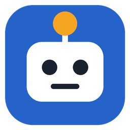

AFİ KOD sınıf sürümü
Öğretmen bilgisayarında küçük bir sunucu çalışır; öğretmen öğrencileri canlı izler, mesaj gönderir, güncellemeleri tek tuşla yapar. Öğrenci bilgisayarlarına kurulan istemci ağ olsa da olmasa da çalışır, öğretmen sunucusunu kendisi bulur. Tek kurulum dosyası; Python kurmak gerekmez.
İndir

Tüm sürümler: Sürümler sayfası · Kaynak kod: GitHub · Uygulamanın internetteki hali: isikcirobot_v1
Nasıl çalışır?
AFİ KOD (istemci ya da tarayıcı)
afi-sunucu · panel
- İlerleme öğretmen bilgisayarında tutulur. Öğrenci hangi bilgisayara oturursa otursun adını ve robotunu seçince kaldığı yerden devam eder.
- Öğretmen panelinde her öğrencinin hangi adımda olduğu, yıldızları, şu anki blokları ve son olayları görünür.
- Admin öğretmen hesapları açar; her öğretmen yalnızca kendi ağ aralığındaki öğrencileri görür (ör.
192.168.1.0/24). - "Güncellemeleri denetle" bu sayfadaki paketi indirir, doğrular ve kurar; öğrencilere "Yeni sürüm hazır" bildirimi gider. Sorun olursa eski sürüme tek tuşla dönülür.
1. Öğretmen bilgisayarı
- afi-sinif-kurulum.exe dosyasına çift tıklayın. Windows "Bilgisayarınız korundu" derse Ek bilgi → Yine de çalıştır.
- İlk soruda Tüm kullanıcılar için seçin (yönetici izni ister). Böylece güvenlik duvarı izni kurulumda verilir, Windows sonradan sormaz.
- Lisans sözleşmesini okuyup kabul edin.
- Kurulum türünde Öğretmen bilgisayarı (sunucu) seçin. Sunucunun adını, portu (8000) ve öğrenci kayıtlarının tutulacağı klasörü kontrol edin.
- Kurulum klasörünü onaylayıp (
C:\afikod) Kur'a basın. Bitince sunucu açılır ve öğretmen paneli tarayıcıda görünür. İlk açılışta admin hesabını oluşturun.
Sunucu penceresiz, arka planda çalışır. Görev çubuğunda saatin yanındaki afi simgesine tıklayınca panel açılır; sağ tıkla AFİ KOD'u öğretmen olarak açabilir ya da sunucuyu kapatabilirsiniz. Simge görünmüyorsa saatin yanındaki ^ okuna bakın; oradan görev çubuğuna sürükleyerek sabitleyebilirsiniz. Sonraki derslerde masaüstündeki afi sınıf sunucusu simgesiyle açılır.
Panelde üstteki ▶ AFİ KOD'u aç düğmesi uygulamayı öğretmen olarak açar ("Çözümü yükle" görünür). Sunucunun bilgileri (adresler, kayıt klasörü, son olaylar) Ayarlar sekmesindedir.
Her şey tek klasörde: C:\afikod program, C:\afikod\kayitlar\sunucu öğrenci kayıtları (yedek için bu klasörü kopyalayın).
2. Öğrenci bilgisayarları
Önerilen: kurulum
- Aynı afi-sinif-kurulum.exe dosyasını (USB'den) her öğrenci bilgisayarında açın. Bilgisayardaki herkes kullanacaksa Tüm kullanıcılar için, yönetici parolanız yoksa Yalnızca benim için seçin.
- Kurulum türünde Öğrenci bilgisayarı (istemci) seçin. Öğretmen sunucusunun adresini boş bırakabilirsiniz; program sunucuyu ağda kendisi bulur.
- Masaüstüne AFİ KOD simgesi gelir; program Windows açılışında arka planda başlar. Kayıtlar
C:\afikod\kayitlar\istemci\<Windows kullanıcısı>içinde tutulur.
Çok bilgisayara tek komutla (sessiz kurulum)
Yönetici olarak açılmış Komut İstemi'nde (Başlat'a cmd yazın, sağ tık → Yönetici olarak çalıştır), kurulum dosyasının bulunduğu klasörde tek satır yazın; pencere açılmadan kurulur:
afi-sinif-kurulum.exe /VERYSILENT /ALLUSERS /ROL=istemci
Sunucu adresini de vermek için sona /SUNUCU=192.168.1.20:8000 ekleyin. Öğretmen bilgisayarı için: /ROL=sunucu /PORT=8000.
Kurulumsuz: tarayıcıdan
Öğrenci tarayıcıda http://ÖĞRETMEN-PC:8000 adresini açar (ÖĞRETMEN-PC yerine öğretmen bilgisayarının adı ya da siyah pencerede yazan IP adresi). Bu yolda ağ koparsa açık sayfa çalışır ama yeniden açılamaz.
Sık sorulanlar
Öğretmen bilgisayarının IP adresi değişirse?
İstemci sunucuyu bilgisayar adından ve ağ taramasıyla yeniden bulur. Tarayıcıdan bağlananlar için siyah pencerenin en altında bilgisayar adıyla yazılan adres değişmez.
8000 portu kullanımda diyor.
Sunucu zaten açık olabilir. Başka port için Komut İstemi'nde (yönetici gerekmez) program klasöründe: afi-sunucu.exe --port 8001
Ayarları değiştirmek, türü değiştirmek, kaldırmak
Kurulum dosyasını yeniden açın: "afi sınıf bu bilgisayarda kurulu" sayfasında Güncelle ya da ayarları / kurulum türünü değiştir ya da Kaldır seçin. Kaldırmak için Denetim Masası → Programlar da kullanılabilir. Öğrenci kayıtları ayrıca sorulmadan silinmez.
Yeni sürüm çıkınca
AFİ KOD içeriği öğretmen panelindeki Güncellemeleri denetle ile gelir; öğrenci bilgisayarları yeni içeriği sunucudan kendileri alır. Programın kendisi (afi sınıf) için yeni kurulum dosyasını aynı şekilde çalıştırın; ayarlar ve kayıtlar korunur.
Python ile çalıştırmak (exe yerine)
Python 3.8 veya yenisi gerekir. Kaynak kodu zip olarak indirip ayıklayın. Klasörde Komut İstemi açıp komutları teker teker yazın: python --version (sürümü gösterir; görünmezse py --version deneyin), ardından öğretmen bilgisayarında python afi-sunucu.py, öğrenci bilgisayarında python afi-istemci.py. Yönetici izni gerekmez.
Başka dersler için de kullanılabilir mi?
Evet. Sunucu ve istemci "uygulama paketi" mantığıyla çalışır: her ders ayrı bir paket (zip + afi-paket.json) olarak eklenir ve aynı panelden izlenir.